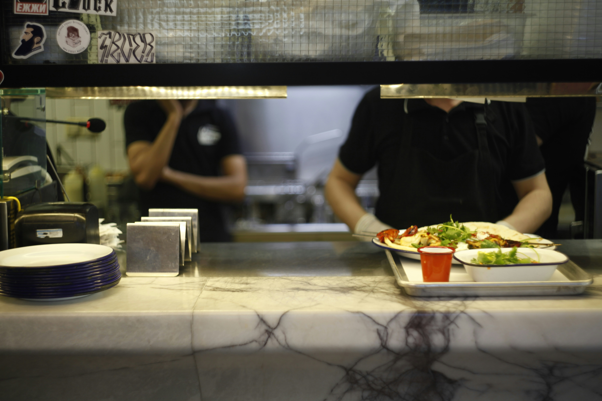

KantinKu
Semua Menu
Denah & Kontak
Daftar Favorite
Masuk
Dapatkan informasi mengenai kantimu disini
Belakang gedung Hukum, Kantin Merah
Kantin Patuanan
Gera Ice Cream
Kantin Jajanan Kekinian
Kantin Mah Ica 2
Teh Poci
Kantin Patuanan
Kantin Barokah
Warmindo
Kantin Bunda Gorowok
Kantin Teh Teke
Kantin Patuanan
Kantin Mbak Shopie
Kantin Patuanan
Kantin Mbak Annisa
Kantin Patuanan
Kantin Ice Cube
✕
Detail Kantin

Nama Kantin
Deskripsi kantin
Lokasi Kantin
Jam Buka
Klik untuk WhatsApp
 KantinKu
KantinKu